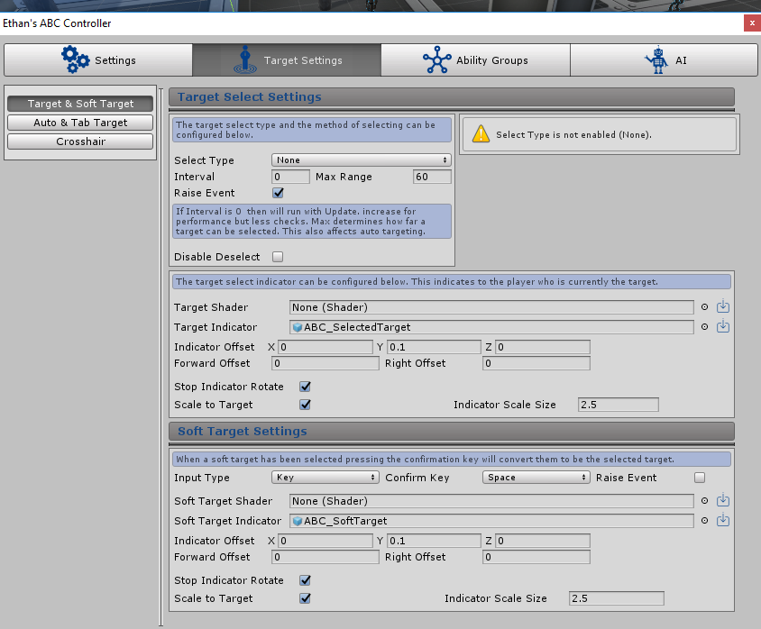

Target & Soft Target
Overview
Configuration below will enable the entity to target other entities in game. Abilities can track targetted abilities but other functionality is also linked to targetting like showing health/mana on target. There is different types of targetting avaliable from hovering to clicking.

Select Type
The select type determines how the system can record the target and world target position. 3 options can be selected: None, Mouse or Crosshair.
If mouse is selected then the target will be recorded using the mouse position i.e what gameobject the mouse is hovering over.
If Crosshair is selected then the target will be recorded by sending a raycast through the crosshair position i.e what gameobject the crosshair is hovering over.
If none is selected then the target can not be retrieved from clicking/hovering with the mouse/crosshair. If no ABC objects are picked up from the selection then any object hit is recorded as a world target.
Interval
Determines how often the target select system will run. If 0 is entered in the interval then the target select system will run within update, else it will run every interval defined. The higher the interval number the greater the performance, however the higher the number the less likely the system will pick up a ‘click’ from the user so target selection will not be as responsive.
Max Range
Max range that the entity can select targets from. If the current target moves out of this range they will also be deselected. This also determines the max range for auto targeting. More information on auto targetting can be found by clicking the following link: Auto Target Select
Target Raise Event
If true then an event delegate will be invoked notifying all subscribed of the target object that has been set. This way any scripts outside of the system can be setup to know the which gameobject has been set as the ABC current target.
Code example to subscribe to the event delegate:
private void OnEnable() {
this.followTargetABC = followTarget.GetComponentInChildren<ABC_Controller>();
//subscribe to the event
if (this.followTargetABC != null)
this.followTargetABC.onTargetSet += this.SetLockOnTarget;
}
public void SetLockOnTarget(GameObject NewLockOnTarget) {
this.lockOnTarget = NewLockOnTarget;
}
private void OnDisable() {
//Unsubscribe to any events
if (this.followTargetABC != null)
this.followTargetABC.onTargetSet -= this.SetLockOnTarget;
}
Disable Deselect
If ticked then at no point during play will the system automatically deselect the current target due to being out of range or from other factors (i.e the input cancel trigger being pressed). The only time a target will be deselected is cause another object has been targeted.
Hover For Target
If enabled then an object will instantly become a target whilst the mouse or crosshair is hovering over the object. If no ABC objects are picked up from the selection then any object hit is recorded as a world target.
Click For Target
If ticked then an object will become a target when a trigger is inputted whilst the mouse or crosshair is hovering over the object, i.e a mouse click to select target. If no ABC objects are picked up from the selection then any object hit is recorded as a world target.
If click for target is enabled the following settings will appear:
-
Input Type
-
The type of input expected to activate the click for target event, either a hardcoded key can be inserted
or a button string which links to the same string setup in the Unity Input Manager.
-
Key (If ‘Key’ Input Type is selected)
-
A key can be selected from Unity’s predefined drop down to trigger the click for target selection. This key is hardcoded.
-
Button (If ‘Button’ Input Type is selected)
-
A string can be entered which should match the same string setup in the Unity Input Manager.
This method allows the end user to configure inputs as per Unity functionality to trigger the click for target selection.
Soft Target Override
If true then soft target status will always be applied instead of the object becoming a main target. Soft target is a secondary target type and acts primarily as a pre-target status. The entity can have both a target and a soft target. Although the target will always take priority over the soft target. Configuration can be setup for the system to convert the soft target into the main current target on input. Abilities can also be setup to target the soft target as a backup if the main target has not yet been selected.
This can be used for example to switch targets during play, whilst the entity has a main target set in game you can show a graphic and toggle through ‘soft targets’ with an input to confirm the new target.
Select Leeway
The system is designed to send out an accurate cast to find any targets under the mouse/crosshair however if this setting is enabled and no targets are found from the accurate cast it will send out a second cast which is less accurate (leeway) to hopefully pick up any objects near the mouse/crosshair. This gives a the player more of a chance to select a target.
If enabled the following settings appear:
-
Leeway Range
-
The radius of the leeway cast sent out by the target select system. The higher the number the less
accurate the crosshair/mouse has to be to select a target.
Target Tags Only
ABC or Unity tags can be defined here to tell the system that only objects with these tags can be targeted by this entity. If an object doesn’t have any of the tags listed then they will never become a target of the entity.
Tags can be added using the “+” button, removed using the “x” button or reordered with the arrow buttons
Target Shader
This setting requires a shader which will be applied to the current target object. The shader will indicate what object is currently selected during play.
If the load default icon  is clicked then the ABC/OutlineGlow default shader found in
the ABC Resources folder will be added to the the setting. This example can be used, referenced or edited.
is clicked then the ABC/OutlineGlow default shader found in
the ABC Resources folder will be added to the the setting. This example can be used, referenced or edited.
Target Indicator
This setting accepts an object which will appear at the current target object position. The object will indicate what object is currently selected during play. An example for this is a 2d plane with a circle graphic which can be applied to the feet of the current target to show they are currently selected.
If the load default icon is clicked then the ABC_SelectedTarget default prefab found in the
ABC Resources folder will be added to the the setting. This example can be used, referenced or edited.
If an object has been added the following settings will appear:
-
Indicator Offset
-
X, Y, Z float values can be entered which will modify where the target indicator object is positioned
from the object origin. I.e 90 in the X box will move the object up the X axis by 90 and can be used to make
the indicator appear at the feet for example.
-
Forward Offset
-
A float value can be entered here to move the indicator object forward from the object origin position.
If negative value is entered it will move the indicator backwards rather then forwards.
-
Right Offset
-
A float value can be entered here to move the indicator object to the right from the object origin position.
If negative value is entered it will move the indicator left rather then right.
Using the above Offset the indicator can be placed at any desirable position on the target object.
-
Stop Indicator Rotate
-
If true then the object indicator that shows a target has been selected will have it's rotation frozen and will
always face the same direction. This means that if the object tumbles over it will not change the direction
the indicator is facing. However if false then the indicator will rotate with the object.
-
Scale to Target
-
If true then the target indicator will scale with the target. I.e if the target grows then so will the target indicator
-
If ticked then ‘Indicator Scale Size’ will appear where a scale size can be entered into the box.
If 2 is entered then the indicator will be x2 the scale of the target object etc.
Soft Target Settings
Soft target is a secondary target type and acts primarily as a pre-target status. The entity can have both a target and a soft target. Although the target will always take priority over the soft target. Configuration can be setup for the system to convert the soft target into the main current target on input. Abilities can also be setup to target the soft target as a backup if the main target has not yet been selected.
Soft Target to Target Input Type
The type of input expected to activate the conversion from soft target to main target, either a hardcoded key can be inserted or a button string which links to the same string setup in the Unity Input Manager.
-
Key (If ‘Key’ Input Type is selected)
-
A key can be selected from Unity’s predefined drop down to trigger the conversion from soft target to main target.
This key is hardcoded.
-
Button (If ‘Button’ Input Type is selected)
-
A string can be entered which should match the same string setup in the Unity Input Manager.
This method allows the end user to configure inputs as per Unity functionality to trigger the
conversion from soft target to main target.
Soft Target Raise Event
If true then an event delegate will be invoked notifying all subscribed of the soft target object that has been set. This way any scripts outside of the system can be setup to know the which gameobject has been set as the ABC soft target.
Code example to subscribe to the event delegate:
private void OnEnable() {
this.followSoftTargetABC = followTarget.GetComponentInChildren<ABC_Controller>();
//subscribe to the event
if (this.followSoftTargetABC != null)
this.followSoftTargetABC.onSoftTargetSet += this.SetLockOnSoftTarget;
}
public void SetLockOnSoftTarget(GameObject NewLockOnSoftTarget) {
this.lockOnSoftTarget = NewLockOnSoftTarget;
}
private void OnDisable() {
//Unsubscribe to any events
if (this.followSoftTargetABC != null)
this.followSoftTargetABC.onSoftTargetSet -= this.SetLockOnSoftTarget;
}
Soft Target Shader
This setting requires a shader which will be applied to the current soft target object.
The shader will indicate what object is currently a soft target during play.
If the load default icon is clicked then the ABC/Glow default shader found in the ABC
Resources folder will be added to the the setting. This example can be used, referenced or edited.
Soft Target Indicator
This setting accepts an object which will appear at the current soft target object position. The object will indicate what object is currently a soft target during play. An example for this is a 2d plane with a circle graphic which can be applied to the feet of the current soft target to show they are currently selected as a soft target.
If the load default icon is clicked then the ABC_SoftTarget default prefab found in the
ABC Resources folder will be added to the the setting. This example can be used, referenced or edited.
If an object has been added the following settings will appear:
-
Indicator Offset
-
X, Y, Z float values can be entered which will modify where the soft target indicator
object is positioned from the object origin. I.e 90 in the X box will move the object up the X axis
by 90 and can be used to make the indicator appear at the feet for example.
-
Forward Offset
-
A float value can be entered here to move the indicator object forward from the object origin position.
If negative value is entered it will move the indicator backwards rather then forwards.
-
Right Offset
-
A float value can be entered here to move the indicator object to the right from the object origin position.
If negative value is entered it will move the indicator left rather then right.
Using the above Offset the indicator can be placed at any desirable position on the target object.
-
Stop Indicator Rotate
-
If true then the object indicator that shows a soft target has been selected will have it's
rotation frozen and will always face the same direction. This means that if the object tumbles
over it will not change the direction the indicator is facing. However if false then the
indicator will rotate with the object.
-
Scale to Target
-
If true then the target indicator will scale with the soft target. I.e if the
soft target grows then so will the target indicator
-
If ticked then ‘Indicator Scale Size’ will appear where a scale size can be entered into the box.
If 2 is entered then the indicator will be x2 the scale of the soft target object etc.